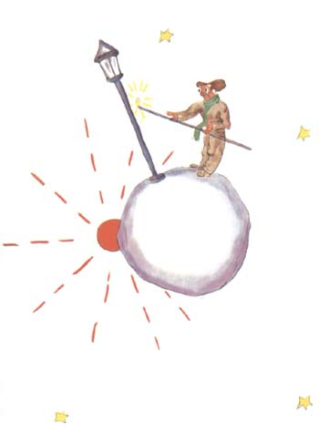
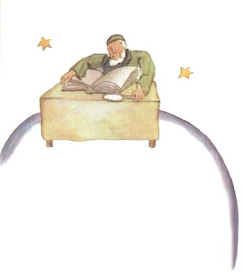

小王子目录
首页、1--3 章4--6 章
7--9 章
10-12章
> 13-15章
16-20章
21-23章
24-25章
26-27章
小王子作者
小王子解读与分析
小王子下载（PDF版）
小王子作者专题
小王子读后感集锦
《小王子》
[法] 圣埃克苏佩里
第四个行星是一个实业家的星球。这个人忙得不可开交，小王子到来的时候， 他甚至连头都没有抬一下。
小王子对他说：“您好。您的烟卷灭了。”
“三加二等于五。五加七等于十二。十二加三等于十五。你好。十五加七，二十二。二十二加六，二十八。没有时间去再点着它。二十六加五，三十一。哎 哟！一共是五亿一百六十二万二千七百三十一。”
“五亿什么呀？”
“嗯？你还待在这儿那？五亿一百万……我也不知道是什么了。我的工作很多…… 我是很严肃的，我可是从来也没有功夫去闲聊！二加五得七……”
“五亿一百万什么呀？”小王子重复问道。一旦他提出了一个问题，是从来 也不会放弃的。
这位实业家抬起头，说：
“我住在这个星球上五十四年以来，只被打搅过三次。第一次是二十二年前， 不知从哪里跑来了一只金龟子来打搅我。它发出一种可怕的噪音，使我在一笔帐
目中出了四个差错。第二次，在十一年前，是风湿病发作，因为我缺乏锻炼所致。 我没有功夫闲逛。我可是个严肃的人。现在……这是第三次！我计算的结果是五亿
一百万……”
“几百万什么？”
这位实业家知道要想安宁是无望的了，就说道：
“几百万个小东西，这些小东西有时出现在天空中。”
“苍蝇吗？”
“不是，是些闪闪发亮的小东西。”
“是蜜蜂吗？”
“不是，是金黄色的小东西，这些小东西叫那些懒汉们胡思乱想。我是个严 肃的人。我没有时间胡思乱想。”
“啊，是星星吗？”
“对了，就是星星。”
“你要拿这五亿星星做什么？”
“五亿一百六十二万七百三十一颗星星。我是严肃的人，我是非常精确的。”
“你拿这些星星做什么？”
“我要它做什么？”
“是呀。”
“什么也不做。它们都是属于我的。”
“星星是属于你的？”
“是的。”
“可是我已经见到过一个国王，他……”
“国王并不占有，他们只是进行‘统治’。这不是一码事。”
“你拥有这许多星星有什么用？”
“富了就可以去买别的星星，如果有人发现了别的星星的话。”
小王子自言自语地说：“这个人想问题有点象那个酒鬼一样。”
可是他又提了一些问题：
“你怎么能占有星星呢？”
“那么你说星星是谁的呀？”实业家不高兴地顶了小王子一句。
“我不知道，不属于任何人。”
“那么，它们就是我的，因为是我第一个想到了这件事情的。”
“这就行了吗？”
“那当然。如果你发现了一颗没有主人的钻石，那么这颗钻石就是属于你的。 当你发现一个岛是没有主的，那么这个岛就是你的。当你首先想出了一个办法， 你就去领一个专利证，这个办法就是属于你的。既然在我之前不曾有任何人想到 要占有这些星星，那我就占有这些星星。”
“这倒也是。可是你用它们来干什么？”小王子说。
“我经营管理这些星星。我一遍又一遍地计算它们的数目。这是一件困难的 事。但我是一个严肃认真的人！”
小王子仍然还不满足，他说：
“对我来说，如果我有一条围巾，我可以用它来围着我的脖子，并且能带走 它。我有一朵花的话，我就可以摘下我的花，并且把它带走。可你却不能摘下这 些星星呀！”
“我不能摘，但我可以把它们存在银行里。”
“这是什么意思呢？”
“这就是说，我把星星的数目写在一片小纸头上，然后把这片纸头锁在一个 抽屉里。”
“这就算完事了吗？”
“这样就行了。”
小王子想道：“真好玩。这倒蛮有诗意，可是，并不算是了不起的正经事。”
关于什么是正经事，小王子的看法与大人们的看法非常不同。他接着又说：
“我有一朵花，我每天都给她浇水。我还有三座火山，我每星期把它们全都 打扫一遍。连死火山也打扫。谁知道它会不会再复活。我拥有火山和花，这对我 的火山有益处，对我的花也有益处。但是你对星星并没有用处……”
实业家张口结舌无言以对。于是小王子就走了。
在旅途中，小王子只是自言自语地说了一句：“这些大人们真是奇怪极了。”
第五颗行星非常奇怪，是这些星星中最小的一颗。行星上刚好能容得下一盏 路灯和一个点路灯的人。小王子怎么也解释不通：这个坐落在天空某一角落，既
没有房屋又没有居民的行星上，要一盏路灯和一个点灯的人做什么用。

但他自己猜想：“可能这个人思想不正常。但他比起国王，比起那个爱虚荣 的人，那个实业家和酒鬼，却要好些。至少他的工作还有点意义。当他点着了他 的路灯时，就象他增添了一颗星星，或是一朵花。当他熄灭了路灯时，就象让星 星或花朵睡着了似的。这差事真美妙，就是真正有用的了。”
小王子一到了这个行星上，就很尊敬地向点路灯的人打招呼：
“早上好。――你刚才为什么把路灯灭了呢？”
“早上好。――这是命令。”点灯的回答道。
“命令是什么？”
“就是熄掉我的路灯。――晚上好。”
于是他又点燃了路灯。
“那么为什么你又把它点着了呢？”
“这是命令。”点灯的人回答道。
“我不明白。”小王子说。
“没什么要明白的。命令就是命令。”点灯的回答说。“早上好。”
于是他又熄灭了路灯。
然后他拿一块有红方格子的手绢擦着额头。
“我干的是一种可怕的职业。以前还说得过去，早上熄灯，晚上点灯，剩下 时间，白天我就休息，夜晚我就睡觉……”
“那么，后来命令改变了，是吗？”
点灯的人说：“命令没有改，惨就惨在这里了！这颗行星一年比一年转得更 快，而命令却没有改。”
“结果呢？”小王子问。
“结果现在每分钟转一圈，我连一秒钟的休息时间都没有了。每分钟我就要 点一次灯，熄一次灯！”
“真有趣，你这里每天只有一分钟长？”
“一点趣味也没有，”点灯的说，“我们俩在一块说话就已经有一个月的时 间了。”
“一个月？”
“对。三十分钟。三十天！――晚上好。”
于是他又点着了了他的路灯。
小王子瞅着他，他喜欢这个点灯人如此忠守命令。这时，他想起了他自己从 前挪动椅子寻找日落的事。他很想帮助他的这位朋友。 “告诉你，我知道一种能使你休息的办法，你要什么时候休息都可以。”
“我老是想休息。”点灯人说。
因为，一个人可以同时是忠实的，又是懒惰的。
小王子接着说：
“你的这颗行星这样小，你三步就可以绕它一圈。你只要慢慢地走，就可以 一直在太阳的照耀下，你想休息的时候，你就这样走……那么，你要白天又多长它 就有多长。”
“这办法帮不了我多打忙，生活中我喜欢的就是睡觉。”点灯人说。
“真不走运。”小王子说。
“真不走运。”点灯人说。“早上好。”
于是他又熄灭了路灯。
小王子在他继续往前旅行的途中，自言自语地说道：
“这个人一定会被其他那些人，国王呀，爱虚荣的呀，酒鬼呀，实业家呀， 所瞧不起。可是唯有他不使我感到荒唐可笑。这可能是因为他所关心的是别的事， 而不是他自己。”
他惋惜地叹了口气，并且又对自己说道：
“本来这是我唯一可以和他交成朋友的人。可是他的星球确实太小了，住不 下两个人……”
小王子没有勇气承认的是：他留恋这颗令人赞美的星星，特别是因为在那里 每二十四小时就有一千四百四十次日落！
第六颗行星则要大十倍。上面住着一位老先生，他在写作大部头的书。

“瞧！来了一位探险家。”老先生看到小王子时，叫了起来。
小王子在桌旁坐下，有点气喘吁吁。他跑了多少路啊！
“你从哪里来的呀？”老先生问小王子。
“这一大本是什么书？你在这里干什么？”小王子问道。
“我是地理学家。”老先生答道。
“什么是地理学家？”
“地理学家，就是一种学者，他知道哪里有海洋，哪里有江河、城市、山脉、 沙漠。”
“这倒挺有意思。”小王子说。“这才是一种真正的行当。”他朝四周围看 了看这位地理学家的星球。他还从来没有见过一颗如此壮观的行星。
“您的星球真美呀。上面有海洋吗？”
“这我没法知道。”地理学家说。
“啊！”小王子大失所望。“那么，山脉呢？”
“这，我没法知道。”地理学家说。
“那么，有城市、河流、沙漠吗？”
“这，我也没法知道。”地理学家说。
“可您还是地理学家呢！”
“一点不错，”地理学家说，“但是我不是探察家。我手下一个探察家都没 有。地理学家是不去计算城市、河流、山脉、海洋、沙漠的。地理学家很重要， 不能到处跑。他不能离开他的办公室。但他可以在办公室里接见探察家。他询问 探察家，把他们的回忆记录下来。如果他认为其中有个探察家的回忆是有意思的， 那么地理学家就对这个探察家的品德做一番调查。”
“这是为什么呢？”
“因为一个说假话的探察家会给地理书带来灾难性的后果。同样，一个太爱 喝酒的探察家也是如此。”
“这又是为什么？”小王子说。
“因为喝醉了酒的人把一个看成两个，那么，地理学家就会把只有一座山的 地方写成两座山。”
“我认识一个人，他要是搞探察的话，就很可能是个不好的探察员。”小王 子说。
“这是可能的。因此，如果探察家的品德不错，就对他的发现进行调查。”
“去看一看吗？”
“不。那太复杂了。但是要求探察家提出证据来。例如，假使他发现了一座 大山，就要求他带来一些大石头。”
地理学家忽然忙乱起来。
“正好，你是从老远来的么！你是个探察家！你来给我介绍一下你的星球吧！”
于是，已经打开登记簿的地理学家，削起他的铅笔来。他首先是用铅笔记下 探察家的叙述，等到探察家提出了证据以后再用墨水笔记下来。
“怎么样？”地理学家询问道。
“啊！我那里，”小王子说道，“没有多大意思，那儿很小。我有三座火山， 两座是活的，一座是熄灭了的。但是也很难说。”
“很难说。”地理学家说道。
“我还有一朵花。”
“我们是不记载花卉的。”地理学家说。
“这是为什么？花是最美丽的东西。”
“因为花卉是短暂的。”
“什么叫短暂？”
“地理学书籍是所有书中最严肃的书。”地理学家说道，“这类书是从不会 过时的。很少会发生一座山变换了位置，很少会出现一个海洋干涸的现象。我们 要写永恒的东西。”
“但是熄灭的火山也可能会再复苏的。”小王子打断了地理学家。“什么叫 短暂？”
“火山是熄灭了的也好，苏醒的也好，这对我们这些人来讲都是一回事。” 地理学家说，“对我们来说，重要的是山。山是不会变换位置的。”
“但是，‘短暂’是什么意思？”小王子再三地问道。他一旦提出一个问题 是从不放过的。
“意思就是：有很快就会消失的危险。”
“我的花是很快就会消失的吗？”
“那当然。”
小王子自言自语地说：“我的花是短暂的，而且她只有四根刺来防御外侮！ 可我还把她独自留在家里！”
这是他第一次产生了后悔，但他又重新振作起来：
“您是否能建议我去看些什么？”小王子问道。
“地球这颗行星，”地理学家回答他说，“它的名望很高……”
于是小王子就走了，他一边走一边想着他的花。
1-3章4-6章7-9章10-12章13-15章16-20章21-23章24-25章26-27章